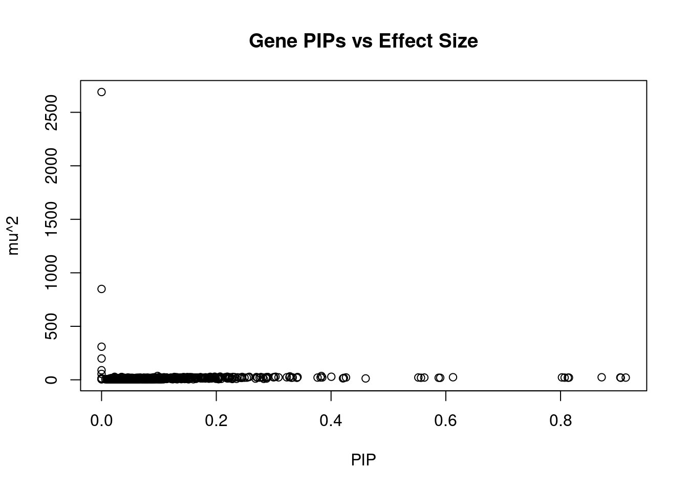
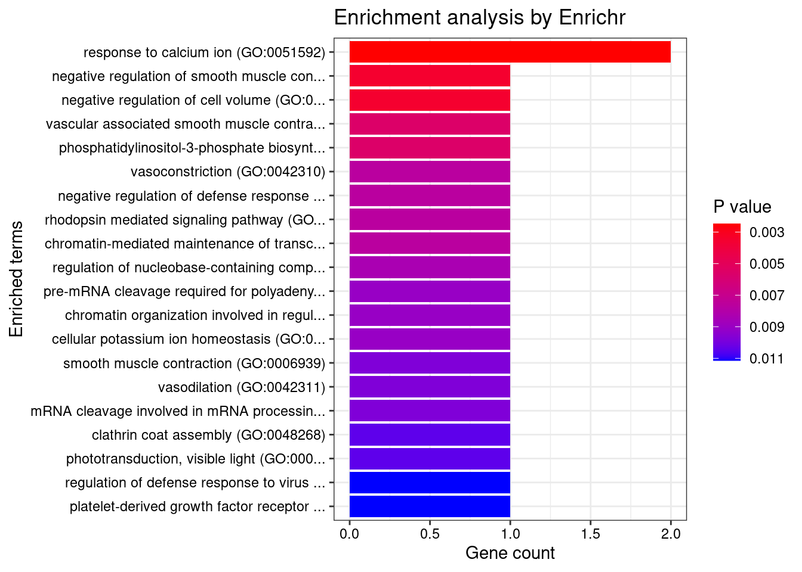

Last updated: 2022-09-02
Checks: 5 2
Knit directory: cTWAS_analysis/
This reproducible R Markdown analysis was created with workflowr (version 1.7.0). The Checks tab describes the reproducibility checks that were applied when the results were created. The Past versions tab lists the development history.
The R Markdown is untracked by Git. To know which version of the R Markdown file created these results, you’ll want to first commit it to the Git repo. If you’re still working on the analysis, you can ignore this warning. When you’re finished, you can run wflow_publish to commit the R Markdown file and build the HTML.
Great job! The global environment was empty. Objects defined in the global environment can affect the analysis in your R Markdown file in unknown ways. For reproduciblity it’s best to always run the code in an empty environment.
The command set.seed(20211220) was run prior to running the code in the R Markdown file. Setting a seed ensures that any results that rely on randomness, e.g. subsampling or permutations, are reproducible.
Great job! Recording the operating system, R version, and package versions is critical for reproducibility.
Nice! There were no cached chunks for this analysis, so you can be confident that you successfully produced the results during this run.
Using absolute paths to the files within your workflowr project makes it difficult for you and others to run your code on a different machine. Change the absolute path(s) below to the suggested relative path(s) to make your code more reproducible.
| absolute | relative |
|---|---|
| /project2/xinhe/shengqian/cTWAS/cTWAS_analysis/data/SCZ_2014_EUR_ME/ | data/SCZ_2014_EUR_ME |
| /project2/xinhe/shengqian/cTWAS/cTWAS_analysis/code/ctwas_config_b37.R | code/ctwas_config_b37.R |
| /project2/xinhe/shengqian/cTWAS/cTWAS_analysis/data/UKBB/ieu-b-42.vcf.gz | data/UKBB/ieu-b-42.vcf.gz |
Great! You are using Git for version control. Tracking code development and connecting the code version to the results is critical for reproducibility.
The results in this page were generated with repository version 0a249f1. See the Past versions tab to see a history of the changes made to the R Markdown and HTML files.
Note that you need to be careful to ensure that all relevant files for the analysis have been committed to Git prior to generating the results (you can use wflow_publish or wflow_git_commit). workflowr only checks the R Markdown file, but you know if there are other scripts or data files that it depends on. Below is the status of the Git repository when the results were generated:
Ignored files:
Ignored: .Rhistory
Ignored: .ipynb_checkpoints/
Ignored: analysis/figure/
Untracked files:
Untracked: G_list.RData
Untracked: Rplot.png
Untracked: SCZ_annotation.xlsx
Untracked: analysis/.ipynb_checkpoints/
Untracked: analysis/SCZ_2014_EUR_ME.Rmd
Untracked: analysis/SCZ_2018_ME.Rmd
Untracked: cache/
Untracked: code/.ipynb_checkpoints/
Untracked: code/AF_out/
Untracked: code/IBD_ME_out/
Untracked: code/LDL_S_out/
Untracked: code/SCZ_2014_EUR_ME_EUR_out/
Untracked: code/SCZ_2014_EUR_out/
Untracked: code/SCZ_2018_ME_out/
Untracked: code/SCZ_2018_S_out/
Untracked: code/SCZ_2018_out/
Untracked: code/SCZ_2020_out/
Untracked: code/SCZ_S_out/
Untracked: code/SCZ_out/
Untracked: code/T2D_out/
Untracked: code/ctwas_config_b37.R
Untracked: code/ctwas_config_b38.R
Untracked: code/mapping.R
Untracked: code/out/
Untracked: code/process_scz_2018_snps.R
Untracked: code/run_AF_analysis.sbatch
Untracked: code/run_AF_analysis.sh
Untracked: code/run_AF_ctwas_rss_LDR.R
Untracked: code/run_Autism_analysis.sbatch
Untracked: code/run_Autism_analysis.sh
Untracked: code/run_Autism_ctwas_rss_LDR.R
Untracked: code/run_BMI_analysis.sbatch
Untracked: code/run_BMI_analysis.sh
Untracked: code/run_BMI_analysis_S.sbatch
Untracked: code/run_BMI_analysis_S.sh
Untracked: code/run_BMI_ctwas_rss_LDR.R
Untracked: code/run_BMI_ctwas_rss_LDR_S.R
Untracked: code/run_Glucose_analysis.sbatch
Untracked: code/run_Glucose_analysis.sh
Untracked: code/run_Glucose_ctwas_rss_LDR.R
Untracked: code/run_IBD_analysis_ME.sbatch
Untracked: code/run_IBD_analysis_ME.sh
Untracked: code/run_IBD_ctwas_rss_LDR_ME.R
Untracked: code/run_LDL_analysis_S.sbatch
Untracked: code/run_LDL_analysis_S.sh
Untracked: code/run_LDL_ctwas_rss_LDR_S.R
Untracked: code/run_SCZ_2014_EUR_analysis.sbatch
Untracked: code/run_SCZ_2014_EUR_analysis.sh
Untracked: code/run_SCZ_2014_EUR_analysis_ME.sbatch
Untracked: code/run_SCZ_2014_EUR_analysis_ME.sh
Untracked: code/run_SCZ_2014_EUR_ctwas_rss_LDR_ME.R
Untracked: code/run_SCZ_2018_analysis.sbatch
Untracked: code/run_SCZ_2018_analysis.sh
Untracked: code/run_SCZ_2018_analysis_ME.sbatch
Untracked: code/run_SCZ_2018_analysis_ME.sh
Untracked: code/run_SCZ_2018_analysis_S.sbatch
Untracked: code/run_SCZ_2018_analysis_S.sh
Untracked: code/run_SCZ_2018_ctwas_rss_LDR.R
Untracked: code/run_SCZ_2018_ctwas_rss_LDR_ME.R
Untracked: code/run_SCZ_2018_ctwas_rss_LDR_S.R
Untracked: code/run_SCZ_2020_analysis.sbatch
Untracked: code/run_SCZ_2020_analysis.sh
Untracked: code/run_SCZ_2020_ctwas_rss_LDR.R
Untracked: code/run_SCZ_analysis.sbatch
Untracked: code/run_SCZ_analysis.sh
Untracked: code/run_SCZ_analysis_S.sbatch
Untracked: code/run_SCZ_analysis_S.sh
Untracked: code/run_SCZ_ctwas_rss_LDR.R
Untracked: code/run_SCZ_ctwas_rss_LDR_S.R
Untracked: code/run_T2D_analysis.sbatch
Untracked: code/run_T2D_analysis.sh
Untracked: code/run_T2D_ctwas_rss_LDR.R
Untracked: code/wflow_build.R
Untracked: code/wflow_build.sbatch
Untracked: data/.ipynb_checkpoints/
Untracked: data/FUMA_output/
Untracked: data/GO_Terms/
Untracked: data/IBD_ME/
Untracked: data/PGC3_SCZ_wave3_public.v2.tsv
Untracked: data/SCZ/
Untracked: data/SCZ_2014_EUR/
Untracked: data/SCZ_2014_EUR_ME/
Untracked: data/SCZ_2018/
Untracked: data/SCZ_2018_ME/
Untracked: data/SCZ_2018_S/
Untracked: data/SCZ_2020/
Untracked: data/SCZ_S/
Untracked: data/Supplementary Table 15 - MAGMA.xlsx
Untracked: data/Supplementary Table 20 - Prioritised Genes.xlsx
Untracked: data/T2D/
Untracked: data/UKBB/
Untracked: data/UKBB_SNPs_Info.text
Untracked: data/gene_OMIM.txt
Untracked: data/gene_pip_0.8.txt
Untracked: data/gwas_sumstats/
Untracked: data/magma.genes.out
Untracked: data/mashr_Heart_Atrial_Appendage.db
Untracked: data/mashr_sqtl/
Untracked: data/notes.txt
Untracked: data/scz_2018.RDS
Untracked: data/summary_known_genes_annotations.xlsx
Untracked: top_genes_32.txt
Untracked: top_genes_37.txt
Untracked: top_genes_43.txt
Untracked: top_genes_54.txt
Untracked: top_genes_81.txt
Untracked: z_snp_pos_SCZ.RData
Untracked: z_snp_pos_SCZ_2014_EUR.RData
Untracked: z_snp_pos_SCZ_2018.RData
Untracked: z_snp_pos_SCZ_2020.RData
Unstaged changes:
Modified: analysis/BMI_Brain_Cortex.Rmd
Deleted: analysis/BMI_S_results.Rmd
Modified: analysis/SCZ_2018_Enrichment.Rmd
Modified: analysis/index.Rmd
Note that any generated files, e.g. HTML, png, CSS, etc., are not included in this status report because it is ok for generated content to have uncommitted changes.
There are no past versions. Publish this analysis with wflow_publish() to start tracking its development.
library(reticulate)
use_python("/scratch/midway2/shengqian/miniconda3/envs/PythonForR/bin/python",required=T)[1] 3575
1 2 3 4 5 6 7 8 9 10 11 12 13 14 15 16 17 18 19 20
553 224 140 119 137 217 198 136 28 193 205 139 64 78 82 106 235 31 428 112
21 22
50 100 [1] 0.1055INFO:numexpr.utils:Note: NumExpr detected 56 cores but "NUMEXPR_MAX_THREADS" not set, so enforcing safe limit of 8.finish
Attaching package: 'dplyr'The following objects are masked from 'package:stats':
filter, lagThe following objects are masked from 'package:base':
intersect, setdiff, setequal, union gene snp
0.0159385 0.0003225 gene snp
7.567 8.497 [1] 77096[1] 1792 6256830 gene snp
0.002803 0.222358 [1] 0.004542 1.896831 genename region_tag susie_pip mu2 PVE z num_methylation
620 GNG12 1_42 0.9136 20.93 2.206e-04 4.447 2
133 ARID1B 6_102 0.9049 19.33 2.013e-04 3.694 2
1531 SYT13 11_28 0.9042 21.95 2.328e-04 -4.427 1
444 DNAJC11 1_5 0.8716 23.90 2.355e-04 4.897 1
880 LZTS2 10_64 0.8146 20.52 1.766e-04 -4.016 1
1109 PDE6B 4_1 0.8127 19.86 1.594e-04 3.761 3
570 FOXO6 1_25 0.8071 20.35 1.637e-04 3.869 3
765 KCNMA1 10_50 0.8024 22.34 1.793e-04 -3.992 3
432 DIP2C 10_1 0.6126 24.17 7.097e-05 -3.132 10
1098 PCBP2 12_33 0.5902 18.77 8.480e-05 -3.984 1
559 FIP1L1 4_39 0.5876 18.95 8.090e-05 4.034 2
115 AP000721.4 11_35 0.5625 21.08 8.651e-05 4.347 1
1391 SEPT4 17_34 0.5568 19.09 7.408e-05 4.103 2
1130 PIK3C2A 11_12 0.5521 21.61 8.546e-05 4.279 1
58 ADARB2 10_2 0.4603 12.95 2.385e-05 1.753 8
1173 PRDM16 1_2 0.4261 22.09 3.508e-05 -2.288 14
450 DOCK1 10_79 0.4224 17.91 4.144e-05 -3.638 1
161 B3GNTL1 17_47 0.4208 13.72 1.985e-05 1.758 9
335 CLYBL 13_50 0.4005 28.62 5.953e-05 3.483 1
499 EPS8L1 19_37 0.3846 22.10 3.380e-05 2.576 4
num_meqtl
620 5
133 7
1531 5
444 5
880 3
1109 7
570 14
765 7
432 32
1098 4
559 10
115 2
1391 8
1130 1
58 33
1173 60
450 8
161 40
335 1
499 12
genename region_tag susie_pip mu2 PVE z num_methylation
723 IK 5_83 0.000e+00 2689.75 0.000e+00 -4.4137 1
1100 PCCB 3_84 0.000e+00 849.25 0.000e+00 4.9579 1
1686 WBP1L 10_66 5.096e-06 309.42 1.042e-13 5.9113 1
272 CD276 15_35 0.000e+00 199.27 0.000e+00 0.8631 1
1011 NEURL1 10_66 4.837e-10 89.55 2.718e-22 -2.6489 1
652 GSTO2 10_66 6.052e-09 55.04 2.615e-20 -3.3637 1
1732 ZFP57 6_23 9.758e-02 36.15 2.995e-06 6.7510 3
802 L3MBTL2 22_17 3.832e-01 35.69 6.797e-05 5.6670 1
881 MAD1L1 7_3 3.282e-01 32.14 2.295e-05 -5.7339 5
1135 PLCH2 1_2 2.067e-01 29.87 1.577e-05 3.1367 2
37 AC104534.3 19_26 1.972e-01 28.97 1.461e-05 -2.9367 1
487 EML1 14_52 2.191e-01 28.95 1.803e-05 -3.0444 1
335 CLYBL 13_50 4.005e-01 28.62 5.953e-05 3.4830 1
1114 PFKFB2 1_107 3.033e-01 28.58 3.410e-05 -3.3548 1
740 IREB2 15_37 2.279e-02 28.04 1.888e-07 5.4848 1
1715 YPEL1 22_4 2.575e-01 27.81 2.392e-05 -3.3129 1
633 GPR137C 14_21 1.892e-01 27.61 1.282e-05 -3.4307 1
67 ADRA1D 20_4 2.450e-01 26.90 2.095e-05 -2.9834 1
74 AGO3 1_22 1.270e-01 26.73 5.590e-06 -4.3961 1
157 ATPAF2 17_15 2.290e-01 26.66 1.814e-05 5.3110 1
num_meqtl
723 7
1100 2
1686 6
272 15
1011 6
652 2
1732 42
802 1
881 22
1135 7
37 2
487 2
335 1
1114 1
740 1
1715 7
633 1
67 6
74 5
157 3 genename region_tag susie_pip mu2 PVE z num_methylation
444 DNAJC11 1_5 0.8716 23.90 2.355e-04 4.897 1
1531 SYT13 11_28 0.9042 21.95 2.328e-04 -4.427 1
620 GNG12 1_42 0.9136 20.93 2.206e-04 4.447 2
133 ARID1B 6_102 0.9049 19.33 2.013e-04 3.694 2
765 KCNMA1 10_50 0.8024 22.34 1.793e-04 -3.992 3
880 LZTS2 10_64 0.8146 20.52 1.766e-04 -4.016 1
570 FOXO6 1_25 0.8071 20.35 1.637e-04 3.869 3
1109 PDE6B 4_1 0.8127 19.86 1.594e-04 3.761 3
115 AP000721.4 11_35 0.5625 21.08 8.651e-05 4.347 1
1130 PIK3C2A 11_12 0.5521 21.61 8.546e-05 4.279 1
1098 PCBP2 12_33 0.5902 18.77 8.480e-05 -3.984 1
559 FIP1L1 4_39 0.5876 18.95 8.090e-05 4.034 2
1391 SEPT4 17_34 0.5568 19.09 7.408e-05 4.103 2
432 DIP2C 10_1 0.6126 24.17 7.097e-05 -3.132 10
802 L3MBTL2 22_17 0.3832 35.69 6.797e-05 5.667 1
335 CLYBL 13_50 0.4005 28.62 5.953e-05 3.483 1
450 DOCK1 10_79 0.4224 17.91 4.144e-05 -3.638 1
123 APOC2 19_31 0.3765 20.86 3.574e-05 3.035 3
1173 PRDM16 1_2 0.4261 22.09 3.508e-05 -2.288 14
1292 RP11-338H14.1 11_54 0.3274 24.80 3.448e-05 -3.556 1
num_meqtl
444 5
1531 5
620 5
133 7
765 7
880 3
570 14
1109 7
115 2
1130 1
1098 4
559 10
1391 8
432 32
802 1
335 1
450 8
123 11
1173 60
1292 1 genename region_tag susie_pip mu2 PVE z num_methylation
1732 ZFP57 6_23 9.758e-02 36.15 2.995e-06 6.751 3
1789 ZSCAN16 6_22 2.273e-02 19.49 1.306e-07 6.250 1
1686 WBP1L 10_66 5.096e-06 309.42 1.042e-13 5.911 1
881 MAD1L1 7_3 3.282e-01 32.14 2.295e-05 -5.734 5
802 L3MBTL2 22_17 3.832e-01 35.69 6.797e-05 5.667 1
1068 OR2J2 6_23 3.438e-02 24.85 3.810e-07 -5.544 1
740 IREB2 15_37 2.279e-02 28.04 1.888e-07 5.485 1
157 ATPAF2 17_15 2.290e-01 26.66 1.814e-05 5.311 1
1100 PCCB 3_84 0.000e+00 849.25 0.000e+00 4.958 1
444 DNAJC11 1_5 8.716e-01 23.90 2.355e-04 4.897 1
1504 STAB1 3_36 3.868e-02 18.13 3.517e-07 4.586 1
457 DST 6_42 2.755e-01 20.61 2.029e-05 -4.463 1
660 HAPLN4 19_15 8.882e-02 19.90 1.901e-06 4.463 2
620 GNG12 1_42 9.136e-01 20.93 2.206e-04 4.447 2
1531 SYT13 11_28 9.042e-01 21.95 2.328e-04 -4.427 1
723 IK 5_83 0.000e+00 2689.75 0.000e+00 -4.414 1
369 CRELD2 22_24 6.797e-02 19.46 1.166e-06 -4.409 1
74 AGO3 1_22 1.270e-01 26.73 5.590e-06 -4.396 1
115 AP000721.4 11_35 5.625e-01 21.08 8.651e-05 4.347 1
168 BCL11B 14_52 1.003e-01 25.55 3.333e-06 4.310 1
num_meqtl
1732 42
1789 4
1686 6
881 22
802 1
1068 1
740 1
157 3
1100 2
444 5
1504 5
457 2
660 8
620 5
1531 5
723 7
369 5
74 5
115 2
168 3[1] 0.01283 genename region_tag susie_pip mu2 PVE z num_methylation
1732 ZFP57 6_23 9.758e-02 36.15 2.995e-06 6.751 3
1789 ZSCAN16 6_22 2.273e-02 19.49 1.306e-07 6.250 1
1686 WBP1L 10_66 5.096e-06 309.42 1.042e-13 5.911 1
881 MAD1L1 7_3 3.282e-01 32.14 2.295e-05 -5.734 5
802 L3MBTL2 22_17 3.832e-01 35.69 6.797e-05 5.667 1
1068 OR2J2 6_23 3.438e-02 24.85 3.810e-07 -5.544 1
740 IREB2 15_37 2.279e-02 28.04 1.888e-07 5.485 1
157 ATPAF2 17_15 2.290e-01 26.66 1.814e-05 5.311 1
1100 PCCB 3_84 0.000e+00 849.25 0.000e+00 4.958 1
444 DNAJC11 1_5 8.716e-01 23.90 2.355e-04 4.897 1
1504 STAB1 3_36 3.868e-02 18.13 3.517e-07 4.586 1
457 DST 6_42 2.755e-01 20.61 2.029e-05 -4.463 1
660 HAPLN4 19_15 8.882e-02 19.90 1.901e-06 4.463 2
620 GNG12 1_42 9.136e-01 20.93 2.206e-04 4.447 2
1531 SYT13 11_28 9.042e-01 21.95 2.328e-04 -4.427 1
723 IK 5_83 0.000e+00 2689.75 0.000e+00 -4.414 1
369 CRELD2 22_24 6.797e-02 19.46 1.166e-06 -4.409 1
74 AGO3 1_22 1.270e-01 26.73 5.590e-06 -4.396 1
115 AP000721.4 11_35 5.625e-01 21.08 8.651e-05 4.347 1
168 BCL11B 14_52 1.003e-01 25.55 3.333e-06 4.310 1
num_meqtl
1732 42
1789 4
1686 6
881 22
802 1
1068 1
740 1
157 3
1100 2
444 5
1504 5
457 2
660 8
620 5
1531 5
723 7
369 5
74 5
115 2
168 3#number of genes for gene set enrichment
length(genes)[1] 14Uploading data to Enrichr... Done.
Querying GO_Biological_Process_2021... Done.
Querying GO_Cellular_Component_2021... Done.
Querying GO_Molecular_Function_2021... Done.
Parsing results... Done.
[1] "GO_Biological_Process_2021"
[1] Term Overlap Adjusted.P.value Genes
<0 rows> (or 0-length row.names)
[1] "GO_Cellular_Component_2021"[1] Term Overlap Adjusted.P.value Genes
<0 rows> (or 0-length row.names)
[1] "GO_Molecular_Function_2021" Term Overlap
1 1-phosphatidylinositol-4-phosphate 3-kinase activity (GO:0035005) 1/7
2 1-phosphatidylinositol-3-kinase activity (GO:0016303) 1/10
3 calcium-activated potassium channel activity (GO:0015269) 1/12
4 phosphatidylinositol 3-kinase activity (GO:0035004) 1/12
5 phosphatidylinositol phosphate kinase activity (GO:0016307) 1/13
6 phosphatidylinositol kinase activity (GO:0052742) 1/15
7 calcium activated cation channel activity (GO:0005227) 1/19
8 3',5'-cyclic-nucleotide phosphodiesterase activity (GO:0004114) 1/21
9 cyclic-nucleotide phosphodiesterase activity (GO:0004112) 1/23
Adjusted.P.value Genes
1 0.04878 PIK3C2A
2 0.04878 PIK3C2A
3 0.04878 KCNMA1
4 0.04878 PIK3C2A
5 0.04878 PIK3C2A
6 0.04878 PIK3C2A
7 0.04973 KCNMA1
8 0.04973 PDE6B
9 0.04973 PDE6B Description FDR Ratio
40 Neonatal Death 0.008538 1/7
44 Perinatal death 0.008538 1/7
56 Generalized Epilepsy and Paroxysmal Dyskinesia 0.008538 1/7
60 NIGHT BLINDNESS, CONGENITAL STATIONARY, AUTOSOMAL DOMINANT 2 0.008538 1/7
65 RETINITIS PIGMENTOSA 40 (disorder) 0.008538 1/7
71 CEREBELLAR ATROPHY, DEVELOPMENTAL DELAY, AND SEIZURES 0.008538 1/7
27 Idiopathic Hypereosinophilic Syndrome 0.009311 1/7
28 Eosinophilic leukemia 0.009311 1/7
29 Loeffler's Endocarditis 0.009311 1/7
38 Chronic eosinophilic leukemia 0.009311 1/7
BgRatio
40 1/9703
44 1/9703
56 1/9703
60 1/9703
65 1/9703
71 1/9703
27 2/9703
28 2/9703
29 2/9703
38 2/9703Loading the functional categories...
Loading the ID list...
Loading the reference list...
Performing the enrichment analysis...Warning in oraEnrichment(interestGeneList, referenceGeneList, geneSet, minNum =
minNum, : No significant gene set is identified based on FDR 0.05!NULLWarning: 'timedatectl' indicates the non-existent timezone name 'n/a'Warning: Your system is mis-configured: '/etc/localtime' is not a symlinkWarning: It is strongly recommended to set envionment variable TZ to 'America/
Chicago' (or equivalent)#number of genes in known annotations
print(length(known_annotations))[1] 130#number of genes in known annotations with imputed expression
print(sum(known_annotations %in% ctwas_gene_res$genename))[1] 16#significance threshold for TWAS
print(sig_thresh)[1] 4.19#number of ctwas genes
length(ctwas_genes)[1] 8#number of TWAS genes
length(twas_genes)[1] 23#show novel genes (ctwas genes with not in TWAS genes)
ctwas_gene_res[ctwas_gene_res$genename %in% novel_genes,report_cols] genename region_tag susie_pip mu2 PVE z num_methylation
133 ARID1B 6_102 0.9049 19.33 0.0002013 3.694 2
570 FOXO6 1_25 0.8071 20.35 0.0001637 3.869 3
765 KCNMA1 10_50 0.8024 22.34 0.0001793 -3.992 3
880 LZTS2 10_64 0.8146 20.52 0.0001766 -4.016 1
1109 PDE6B 4_1 0.8127 19.86 0.0001594 3.761 3
num_meqtl
133 7
570 14
765 7
880 3
1109 7#sensitivity / recall
print(sensitivity) ctwas TWAS
0.00000 0.02308 #specificity
print(specificity) ctwas TWAS
0.9955 0.9887 #precision / PPV
print(precision) ctwas TWAS
0.0000 0.1304
sessionInfo()R version 4.1.0 (2021-05-18)
Platform: x86_64-pc-linux-gnu (64-bit)
Running under: Scientific Linux 7.4 (Nitrogen)
Matrix products: default
BLAS/LAPACK: /software/openblas-0.3.13-el7-x86_64/lib/libopenblas_haswellp-r0.3.13.so
locale:
[1] LC_CTYPE=en_US.UTF-8 LC_NUMERIC=C
[3] LC_TIME=en_US.UTF-8 LC_COLLATE=en_US.UTF-8
[5] LC_MONETARY=en_US.UTF-8 LC_MESSAGES=en_US.UTF-8
[7] LC_PAPER=en_US.UTF-8 LC_NAME=C
[9] LC_ADDRESS=C LC_TELEPHONE=C
[11] LC_MEASUREMENT=en_US.UTF-8 LC_IDENTIFICATION=C
attached base packages:
[1] stats graphics grDevices utils datasets methods base
other attached packages:
[1] readxl_1.4.0 forcats_0.5.1 stringr_1.4.0 purrr_0.3.4
[5] readr_2.1.2 tidyr_1.2.0 tidyverse_1.3.1 tibble_3.1.7
[9] WebGestaltR_0.4.4 disgenet2r_0.99.2 enrichR_3.0 cowplot_1.1.1
[13] ggplot2_3.3.6 dplyr_1.0.9 reticulate_1.26 workflowr_1.7.0
loaded via a namespace (and not attached):
[1] fs_1.5.2 lubridate_1.7.10 bit64_4.0.5 doParallel_1.0.17
[5] httr_1.4.3 rprojroot_2.0.3 backports_1.2.1 tools_4.1.0
[9] doRNG_1.8.2 bslib_0.4.0 utf8_1.2.2 R6_2.5.1
[13] vipor_0.4.5 DBI_1.1.2 colorspace_2.0-3 withr_2.5.0
[17] ggrastr_1.0.1 tidyselect_1.1.2 processx_3.5.3 bit_4.0.4
[21] curl_4.3.2 compiler_4.1.0 git2r_0.28.0 rvest_1.0.0
[25] cli_3.3.0 Cairo_1.5-15 xml2_1.3.2 labeling_0.4.2
[29] sass_0.4.0 scales_1.2.0 callr_3.7.0 systemfonts_1.0.4
[33] apcluster_1.4.9 digest_0.6.29 rmarkdown_2.9 svglite_2.1.0
[37] pkgconfig_2.0.3 htmltools_0.5.3 dbplyr_2.1.1 fastmap_1.1.0
[41] highr_0.9 rlang_1.0.4 rstudioapi_0.13 jquerylib_0.1.4
[45] farver_2.1.0 generics_0.1.2 jsonlite_1.8.0 vroom_1.5.7
[49] magrittr_2.0.3 Matrix_1.3-3 ggbeeswarm_0.6.0 Rcpp_1.0.9
[53] munsell_0.5.0 fansi_1.0.3 lifecycle_1.0.1 stringi_1.7.6
[57] whisker_0.4 yaml_2.2.1 plyr_1.8.7 grid_4.1.0
[61] ggrepel_0.9.1 parallel_4.1.0 promises_1.2.0.1 crayon_1.5.1
[65] lattice_0.20-44 haven_2.4.1 hms_1.1.1 knitr_1.33
[69] ps_1.7.0 pillar_1.7.0 igraph_1.3.1 rjson_0.2.20
[73] rngtools_1.5.2 reshape2_1.4.4 codetools_0.2-18 reprex_2.0.0
[77] glue_1.6.2 evaluate_0.15 getPass_0.2-2 modelr_0.1.8
[81] data.table_1.14.2 png_0.1-7 vctrs_0.4.1 tzdb_0.3.0
[85] httpuv_1.6.1 foreach_1.5.2 cellranger_1.1.0 gtable_0.3.0
[89] assertthat_0.2.1 cachem_1.0.6 xfun_0.24 broom_0.7.8
[93] later_1.2.0 iterators_1.0.14 beeswarm_0.4.0 ellipsis_0.3.2
[97] here_1.0.1